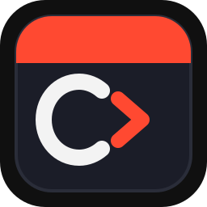

Simple
One-page starter with no build setup
Just edit root files in Codex and preview locally. No framework install and no CI complexity.

Academy Starter Start a Project Use This TemplateAlexandru Dan • AI Product and GTM
Build a Free Website with AI
I help founders and product teams turn AI ideas into scoped offers, fast prototypes, and launch-ready systems that improve adoption and conversion.
The public demo shows the full path: use the template, rewrite the root files, preview locally, push to GitHub, turn on Pages, and connect your own domain.
Focus areas: AI product strategy, agent workflows, conversion messaging, and execution support.
Hosting can stay free. Your domain is usually a separate purchase.
Why this starter works
Why people use this flow
Simple
Just edit root files in Codex and preview locally. No framework install and no CI complexity.
Responsive
The core layout and spacing are already responsive, so first edits are content and branding, not breakpoints.
Free hosting
Use `main` + root publishing, add your domain, and enable HTTPS once DNS and verification are in place.
Visual examples
What people build


About
I work with founders and lean teams that want to move fast with AI, but stay practical. We define the right use case, build a focused workflow, and get something real in front of users quickly.
My approach combines product thinking, implementation support, and conversion-focused communication so your site and your product tell the same clear story.
How we work
Offer
Service 01
Clarify the right AI bets, prioritize by business impact, and define a roadmap your team can execute.
Service 02
Build working prototypes and operational workflows with Codex and lightweight static delivery stacks.
Service 03
Align positioning, homepage messaging, and conversion paths so visitors understand and act faster.
Proof
Launch Speed
The goal is to reduce time spent in abstract planning and get a working flow in front of users early.
Clarity
We simplify messaging and structure so stakeholders and prospects understand value without extra calls.
Leverage
Documentation, prompt recipes, and repeatable workflows ensure the work compounds beyond a one-time release.
Competitor Snapshot
This starter
main and / (root)Carrd
Framer
Webflow
webflow.ioSources: GitHub Pages publish source, GitHub custom domain, Carrd custom domain requirements, Framer pricing, Webflow pricing.
Choose this starter when
Choose a builder when
Start Here
How It Works
Recommended Prompt
Use prompts/landing-page.md first. It gives Codex the clearest structure for a simple homepage.
Local Preview
sh scripts/preview.sh
Git Push
git add . git commit -m "Customize website" git push
Before GitHub Pages
sh scripts/prepublish-check.sh --strict
Fix warnings, then verify domain in GitHub and enable Pages.
The screenshot walkthrough still lives in QUICKSTART.md if you want the full 9-step path.

Keep this style if you want the TVL look, or replace colors, type, and imagery with your own brand in one Codex pass.
FAQ
Yes. This repo uses plain HTML, CSS, and vanilla JavaScript only.
No. This page is the starter. Replace sections, remove what you do not need, and rearrange it however you want.
No. The default flow is branch-based GitHub Pages publishing with no build tooling.
Yes. Run sh scripts/preview.sh and open http://localhost:8000.
The product promise includes a custom domain. GitHub Pages hosting can stay free, but the domain itself is usually a separate purchase.
The starter, GitHub repo, and GitHub Pages hosting can stay free. What usually costs money is the domain you want to connect.
Yes. GitHub recommends verifying the custom domain before you add it to the repository so you reduce takeover risk and keep ownership clearer.
Start with prompts/landing-page.md unless you already know you want a portfolio or personal website structure.
Contact
Start
If you are planning an AI feature, offer redesign, or a fast launch, send context and I will propose a focused next step.
Use template, edit with Codex, run local preview, push to GitHub, enable Pages, add domain, and wait for HTTPS.